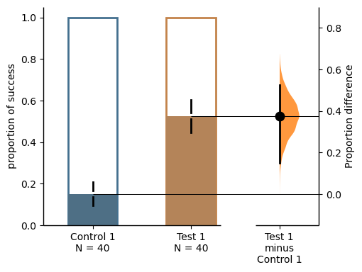
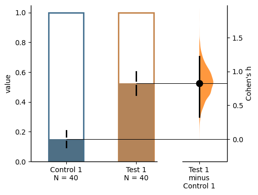
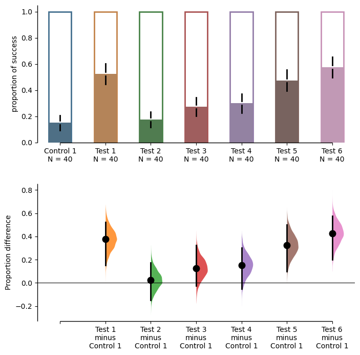
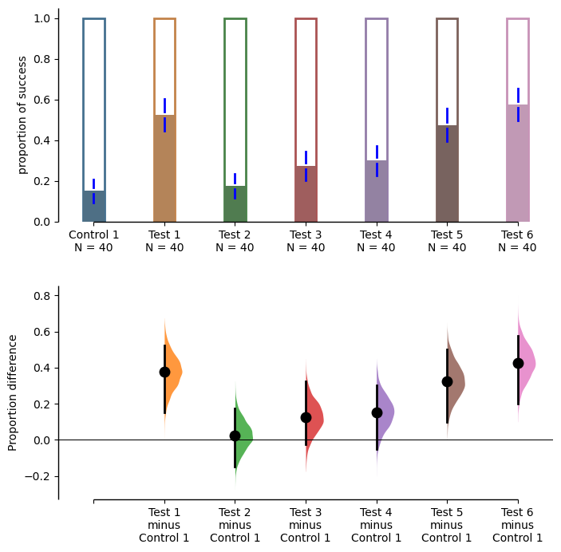
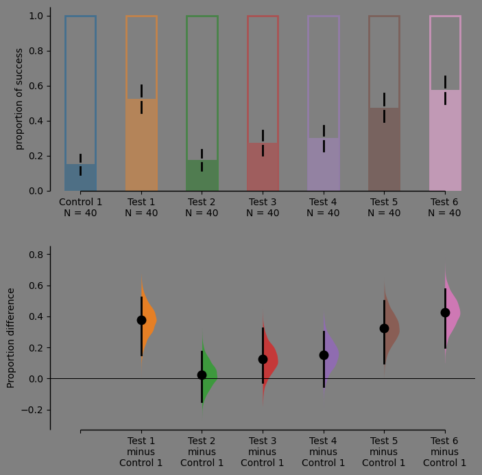

import dabest_nbdev
import numpy as np
import pandas as pd
import matplotlib.pyplot as pltProportion Plot
A guide to plot proportion plot with binary data
Create dataset for demo
def create_demo_prop_dataset(seed=9999, N=40):
import numpy as np
import pandas as pd
np.random.seed(9999) # Fix the seed so the results are replicable.
# Create samples
n = 1
c1 = np.random.binomial(n, 0.2, size=N)
c2 = np.random.binomial(n, 0.2, size=N)
c3 = np.random.binomial(n, 0.8, size=N)
t1 = np.random.binomial(n, 0.5, size=N)
t2 = np.random.binomial(n, 0.2, size=N)
t3 = np.random.binomial(n, 0.3, size=N)
t4 = np.random.binomial(n, 0.4, size=N)
t5 = np.random.binomial(n, 0.5, size=N)
t6 = np.random.binomial(n, 0.6, size=N)
# Add a `gender` column for coloring the data.
females = np.repeat('Female', N / 2).tolist()
males = np.repeat('Male', N / 2).tolist()
gender = females + males
# Add an `id` column for paired data plotting.
id_col = pd.Series(range(1, N + 1))
# Combine samples and gender into a DataFrame.
df = pd.DataFrame({'Control 1': c1, 'Test 1': t1,
'Control 2': c2, 'Test 2': t2,
'Control 3': c3, 'Test 3': t3,
'Test 4': t4, 'Test 5': t5, 'Test 6': t6,
'Gender': gender, 'ID': id_col
})
return df
df = create_demo_prop_dataset()Only accept binary data consisting of 0 and 1.
df.head()| Control 1 | Test 1 | Control 2 | Test 2 | Control 3 | Test 3 | Test 4 | Test 5 | Test 6 | Gender | ID | |
|---|---|---|---|---|---|---|---|---|---|---|---|
| 0 | 1 | 1 | 0 | 0 | 1 | 0 | 0 | 1 | 0 | Female | 1 |
| 1 | 0 | 0 | 0 | 1 | 1 | 1 | 0 | 0 | 0 | Female | 2 |
| 2 | 0 | 0 | 0 | 0 | 1 | 0 | 1 | 1 | 0 | Female | 3 |
| 3 | 0 | 0 | 0 | 0 | 1 | 0 | 0 | 1 | 0 | Female | 4 |
| 4 | 0 | 1 | 0 | 0 | 1 | 0 | 0 | 0 | 1 | Female | 5 |
You need to specify proportional=True for binary data.
two_groups_unpaired = dabest_nbdev.load(df, idx=("Control 1", "Test 1"), proportional=True)
two_groups_unpaired.mean_diffDABEST v0.0.1
=============
Good morning!
The current time is Wed Jan 25 11:20:15 2023.
DABEST v0.0.1
=============
Good morning!
The current time is Wed Jan 25 11:20:15 2023.
The unpaired mean difference between Control 1 and Test 1 is 0.375 [95%CI 0.15, 0.525].
The p-value of the two-sided permutation t-test is 0.0, calculated for legacy purposes only.
5000 bootstrap samples were taken; the confidence interval is bias-corrected and accelerated.
Any p-value reported is the probability of observing theeffect size (or greater),
assuming the null hypothesis ofzero difference is true.
For each p-value, 5000 reshuffles of the control and test labels were performed.
To get the results of all valid statistical tests, use `.mean_diff.statistical_tests`
To get the results of all valid statistical tests, use `.mean_diff.statistical_tests`Effect sizes
Only two effect sizes are supported for binary data:
the mean difference (mean_diff)
two_groups_unpaired.mean_diff.results| control | test | control_N | test_N | effect_size | difference | ci | bca_low | bca_high | bca_interval_idx | ... | pvalue_permutation | permutation_count | permutations_var | pvalue_welch | statistic_welch | pvalue_students_t | statistic_students_t | pvalue_mann_whitney | statistic_mann_whitney | proportional_difference | |
|---|---|---|---|---|---|---|---|---|---|---|---|---|---|---|---|---|---|---|---|---|---|
| 0 | Control 1 | Test 1 | 40 | 40 | mean difference | 0.375 | 95 | 0.15 | 0.525 | (55, 4750) | ... | 0.0 | 5000 | [0.011266025641025641, 0.011266025641025641, 0... | 0.000289 | -3.81474 | 0.000271 | -3.81474 | 0.000434 | 500.0 | 0.825418 |
1 rows × 27 columns
two_groups_unpaired.cohens_h.results| control | test | control_N | test_N | effect_size | difference | ci | bca_low | bca_high | bca_interval_idx | ... | pvalue_permutation | permutation_count | permutations_var | pvalue_welch | statistic_welch | pvalue_students_t | statistic_students_t | pvalue_mann_whitney | statistic_mann_whitney | proportional_difference | |
|---|---|---|---|---|---|---|---|---|---|---|---|---|---|---|---|---|---|---|---|---|---|
| 0 | Control 1 | Test 1 | 40 | 40 | Cohen's h | 0.825418 | 95 | 0.329684 | 1.219937 | (57, 4763) | ... | 0.0 | 5000 | [0.011266025641025641, 0.011266025641025641, 0... | 0.000289 | -3.81474 | 0.000271 | -3.81474 | 0.000434 | 500.0 | 0.825418 |
1 rows × 27 columns
Producing estimation plots
two_groups_unpaired.mean_diff.plot();
two_groups_unpaired.cohens_h.plot();
shared_control = dabest_nbdev.load(df, idx=("Control 1", "Test 1",
"Test 2", "Test 3",
"Test 4", "Test 5", "Test 6"),
proportional=True)
shared_control.mean_diff.plot(fig_size=(8,8));
You can change color of error bar by setting err_color and change width of proportional bar by bar_width
shared_control.mean_diff.plot(fig_size=(8,8), err_color = "blue", bar_width=0.3);
You can change face color by setting face_color
shared_control.mean_diff.plot(fig_size=(8,8),face_color="grey");